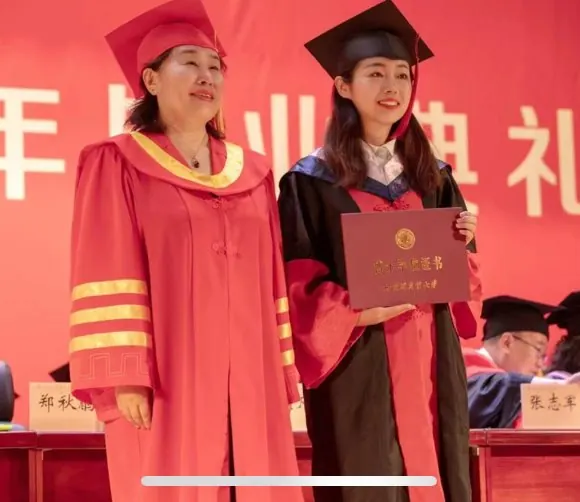
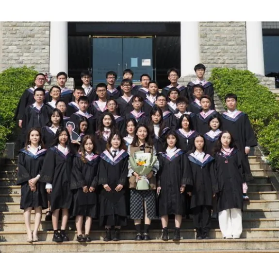

韬光养晦，静待花开
基础科学学院的新闻学专业于 2003 年设立。在校训“求真至善，修德允能”的教导下，无数英才从这里走出。明晰的人生规划，对于现在大学生的成长就业十分关键。在众多优秀的毕业生中，新闻学专业的毕业生毛瑞男，是非常具有人生规划的毕业生代表。在 5 月 5 日，小编采访到了毛瑞男，让我们一起走进她的故事。
2010.9–2014.6 哈尔滨商业大学 新闻学，文学学士学位
2014.9–2017.6 哈尔滨商业大学 产业经济学，经济学硕士学位
2017.9–2021.6 哈尔滨商业大学 产业经济学，经济学博士学位
博士毕业后，现于广东海洋大学任教。硕博期间，在《科教导刊》《人民论坛》《学术前沿》《哈尔滨商业大学学报》等发表多篇期刊。
在小编与毛瑞男学姐的交流中了解到，她的本科专业是新闻学，硕博是产业经济学。对于她跨专业考研上岸、从新闻到经济跨越之大，小编对其更来了兴趣。
哈尔滨商业大学新闻学专业与其他不同，在于它更偏向财经新闻，因此新闻学学生在本科阶段会学习一些经济学基础课程。对于这样微浅的经济学基础，“对于培养经济学的思维逻辑是远远不够的”，毛瑞男回答道。在浅薄的经济学基础上，她稳打稳扎，进一步深耕，她锲而不舍的精神，是她成功路上的助力。跨专业考研本身就是个巨大挑战，是对新领域的学习，除了要解决备考中遇到的困难，还有上岸后随之而来的一系列问题。
她谈到在备考期间，除了与无数经济学考研生作斗争，还在与自己作斗争。在图书馆备考时，萌生过打退堂鼓的想法——一个非经济学专业的学生，跨考是否是正确的选择？面对外界压力与自己偶尔不好的心态，她表示“还是要端正心态，基础薄弱就努力去学，遇到困难就横下心去解决”。
在读研期间，她并未按部就班地学习，而是合理安排时间，劳逸结合，比方说跑步。她回忆起读书阶段时，“我读书的时候比较喜欢晨跑，后来就去跑马拉松，完赛时候的成就感还是蛮解压的。”正如朱光潜所说：“忙里偶然偷闲，闹中偶然觅静，于身于心，都有极大裨益。”在忙碌的学习生活中留出一些空白给自己，一方面积蓄能量，让自己更有力量前行，另一方面有时间反思、分析、判断、选择，让自己看清方向，知道主次，识别真伪。
人生的旅途没有一帆风顺，除了备考期间的困难，毕业之后困难并未消失。她表示遇到了两个问题：一是从事工作的原因，要给学生上课，尤其是经济学，时效性比较强，就要不断补充新知识，这个过程需要不断学习；二是科研工作不能间断，要一直追踪学术前沿。

除此之外，生活上也有些困难。毛瑞男本硕博期间都在哈尔滨商业大学，毕业后一路南下，从位于大陆北边的哈尔滨去到了位于大陆南边的广东湛江。对她来说，最大的挑战是南北方的差异，“一下子换到 4000 多公里外的地方，整个气候、饮食习惯都变了，确实需要一段时间适应。”地方差异是每个漂泊在外的孩子不可避免的。即使困难不断向她涌来，她仍然不轻易说放弃，而是坚持不懈，迎难而上。
人生这趟旅途漫长而又短暂。在这趟旅途中，毛瑞男带着始终要学好的精神，为自己心仪的专业拼搏努力；在这趟孤独的旅程中，锲而不舍、坚持不懈的精神，使她不再孤单，鼓起勇气奋起拼搏！
人生不能盲目前行，好的人生离不开好的规划。毛瑞男表示，当大学老师应该是本科时候就立志成为的目标。本科期间，她便对未来有了明确目标；硕博期间目标更加明确，为之做了计划并努力。博士毕业后，毛瑞男进入广东海洋大学任教。问其有没有向经济学其他领域发展的计划时，她笑道，“因为喜欢学校的氛围，一直都是青春洋溢的。”恬静又充满朝气，浓厚的学术氛围，来来往往的年轻人，懵懂又充满求知欲的眼神，何尝不是毛瑞男的缩影。在她的努力下，她实现了自己的目标。
对于刚步入大学的大学生来说，他们刚刚结束了青春岁月中一场重要的考试，但它并非人生中最沸腾的一页。因此，大学期间不该碌碌无为、混沌度日，而是站在新起点上，拿起手中的画笔，在画卷上不断打草稿，在自己的人生道路上画出更多浓墨重彩的篇章。记住，画笔始终在你们手中，未来的道路由你们自己来书写。
在任大学教师这几年中，毛瑞男表示，“我在商大 11 年的求学之路受到了许多老师的关心和照顾，我现在努力把曾经感受到的温暖与爱传递给我的学生们。”提到对之后工作的展望，她表示要终身学习、不断自我提升，正如前文谈到的“经济学时效性比较强，就要不断补充新知识，这个过程需要不断学习”，唯有不断补充新知识，才能更好地教导学生。在教师这条路上，做有温度的引路人，做言传身教的引路人。承师恩，传师志。

毛瑞男从新闻学到经济学，毕业再到就职工作，一路走来，全情投入，锲而不舍，不忘初心，不断践行着“求真至善，修德允能”的校训。教师这条路并不难走，她稳打稳扎，一步一个脚印地去实现自己的理想，为无数商大新闻学子树立了榜样。希望毛瑞男学姐优秀且努力的求学经历，能激励商大新闻学子，在自己的人生道路上渐入佳境！
图片｜黄羽、韩定坤、何佳怡、曾政玲、刘嘉丽、寸灵垚、侯鑫志
指导教师｜刘杨